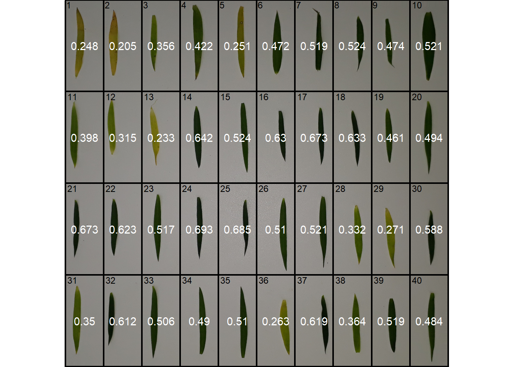
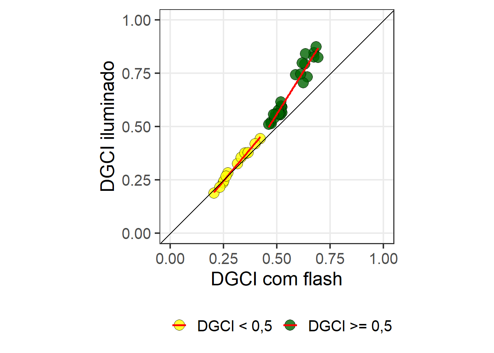
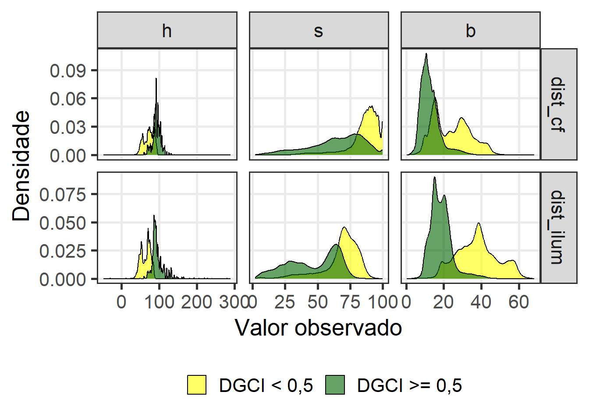

09: Relação entre SPAD e o índice DGCI em folhas de linho obtido em diferentes condições de iluminação
% Analysis
1 Libraries
To reproduce the examples of this material, the R packages the following packages are needed.
2 Data
spad <- import("data/valor_spaad.xlsx")3 DGCI
3.1 Imagem iluminada
img <- image_import("figs/dgci_ilum.jpg")
res_ilu <-
analyze_objects_shp(img,
nrow = 4,
ncol = 10,
index = "B",
watershed = FALSE,
plot = FALSE,
pixel_level_index = TRUE,
object_index = "DGCI")
plot(img)
plot_measures(res_ilu, measure = "DGCI", digits = 3)
plot(res_ilu$shapefiles)3.2 Interior, com flash
img <- image_import("figs/dgci_cf.jpg")
res_cf <-
analyze_objects_shp(img,
nrow = 4,
ncol = 10,
index = "B",
watershed = FALSE,
plot = FALSE,
pixel_level_index = TRUE,
object_index = "DGCI")
plot(img)
plot_measures(res_cf, measure = "DGCI", digits = 3)
plot(res_cf$shapefiles)
4 Juntar os dados
5 Correlação
6 Regressão
6.1 Gráfico
ggplot(df_spad, aes(dgci_cf, dgci_ilu, fill = condicao)) +
geom_point(size = 5, color = "black", shape = 21, alpha = 0.8) +
geom_smooth(method = "lm", se = FALSE, color = "red") +
geom_abline(intercept = 0, slope = 1) +
scale_x_continuous(limits = c(0, 1)) +
scale_y_continuous(limits = c(0, 1)) +
theme_bw(base_size = 19) +
theme(panel.grid.minor = element_blank()) +
labs(x = "DGCI com flash",
y = "DGCI iluminado",
color = "",
fill = "") +
theme(legend.position = "bottom") +
scale_fill_manual(values = c("yellow", "darkgreen")) +
coord_fixed()
ggsave("figs/dgci_regressao.jpg",
width = 6,
height = 6)6.2 Coeficientes
6.3 Densidade
dist_ilum <-
res_ilu[["object_rgb"]] |>
select(h, s, b, DGCI)
dist_cf <-
res_cf[["object_rgb"]] |>
select(h, s, b, DGCI)
df_hist <-
rbind_fill_id(dist_ilum, dist_cf, .id = "condicao") |>
mutate(amarelado = ifelse(DGCI < 0.5, "DGCI < 0,5", "DGCI >= 0,5"))
df_histp <-
df_hist |>
select(-DGCI) |>
pivot_longer(-c(condicao, amarelado)) |>
remove_rows_na() |>
mutate(name = fct_relevel(name, "h", "s", "b"))
ggplot(df_histp, aes(x = value, fill = amarelado)) +
geom_density(alpha = 0.6) +
facet_grid(condicao~name, scales = "free") +
theme_bw(base_size = 20) +
labs(x = "Valor observado",
y = "Densidade",
fill = "") +
theme(legend.position = "bottom",
panel.grid.minor = element_blank()) +
scale_fill_manual(values = c("yellow", "darkgreen"))
ggsave("figs/dgci_density.jpg",
width = 10,
height = 7)